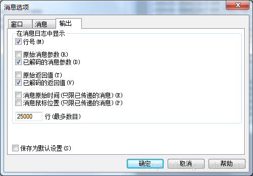

Microsoft Spy++是一个非常好的查看Windows操作系统的窗口、消息、进程、线程信息的工具，简单易用，功能强大。
用途
- 我经常用来查询一个不知道从哪里弹出来的广告窗口是哪个进程搞的鬼……然后干掉
- 枚举所有窗口，查看父子关系，搜索某个窗口是否存在
- 查询一个窗口（包括隐藏窗口）的属性，包括标题、类名、位置、进程线程
- 通过分析其他软件的窗口消息，辅助研究其内部实现原理
- 分析某窗口的消息参数，给其发送冒充消息，以实现特殊的功能
- 默认界面 可查看所有顶层窗口，展开可显示子窗口。
- 右键窗口，选择“消息”，可打开该窗口的消息查看窗口。里面实时显示当前消息。
- 显示一个窗口位置：右键窗口，选择“突出显示”，之后该窗口的边界会闪烁几次，让你轻易地发现它的位置。如果没有闪烁，那么也可以通过点击“属性”，显示出该窗口的位置属性，然后在屏幕上根据该位置大致判断出是哪个窗口。
- 如果需要分析桌面的某一个存在的窗口属性，点击工具条的第5个按钮（如下图），将弹出界面里的圆圈拖到该窗口上。则该窗口属性显示出来。
- 选择工具条第6个按钮，可以在窗口列表中直接定位到该窗口显示。
如图，直接定位到任务栏的子窗口“显示运行的程序”。
- 查看窗口的消息时，可以设置一些条件和格式。
可以设置是否查看父窗口、子窗口、同一进程、同一线程、系统中所有窗口的消息。
可以设置哪些消息类型。（“消息选项”界面第2个TAB页“消息”）
可以设置输出哪些内容。（“消息选项”界面第3个TAB页“输出”）

 注：消息界面的每一列的具体含义可以查阅MSDN
注：消息界面的每一列的具体含义可以查阅MSDN